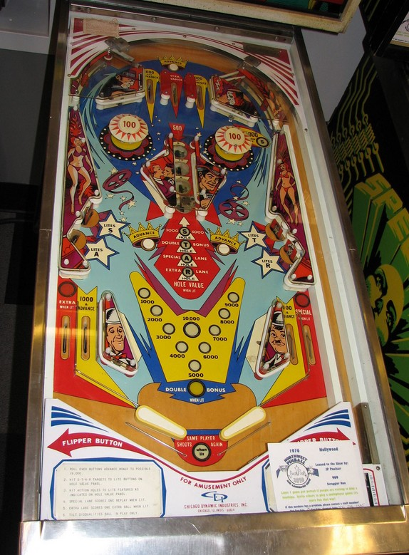

Hollywood is the 2-player version. Cinema is the 4-player version with identical rules and scoring.
While the line of saucers in the center of the table can give tempting awards, you can only get all of them by shooting the saucer lane from below, which is incredibly dangerous. Instead, focus first on building your bonus with shots up the left side of the table back to the top lanes. The drop targets qualify the saucer lane for points, double bonus, extra ball, and specials, with each drop target causing a different saucer to give a different award.
The below picture of Hollywood's playfield was taken from the Internet Pinball Database, where it was originally provided by Jay Stafford.

The rollover button above the top lanes, as well as the two rollover buttons in the center of the playfield, award 1,000 points and 1 bonus advance.
The left and right top lanes award 1,000 points and a bonus advance. The center top lane awards no points, but 3 bonus advances.
Pop bumpers always score 100 points.
4 saucers are arranged in a vertical line. Each saucer pops the ball upward toward the next saucer above it or toward the top lanes. If the ball falls into the saucer lane from above, only the top saucer is scored, since the ball is kicked upwards. If the ball is shot into the saucer from below, all 4 saucers are scored, but the large white posts on either side of the lane make this incredibly dangerous and precise. By default, the saucers in this lane score 500 points.
The drop targets on the left and right each score 1,000 points and light one saucer for the rest of that ball. The drop targets never reset mid-ball for any reason.
Hollywood has a conventional in/out lane setup. In lanes score 1,000 points and a bonus advance. Out lanes score 1,000 points and can be lit for extra ball (left) or Special (right) as described above. There are no gates, kickbacks, or center posts.
Bonus is advanced once by any Advance rollover button, the left and right top lanes, and both in lanes. Bonus is advanced 3 times by the center top lane. Each bonus advance adds 1,000 points to the bonus, and the maximum base bonus is 19,000 points. Double bonus can be earned on any ball by knocking down the T drop target, then shooting the saucer lane from below; double bonus is never given for free. Bonus cannot be collected mid-ball.
As far as I have found, there is no way to have extra balls or Specials award points for competition/novelty play. Tilt ends the ball in play only. Maximum 1 extra ball per ball in play.